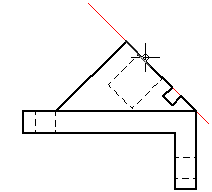
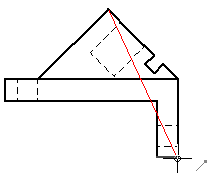
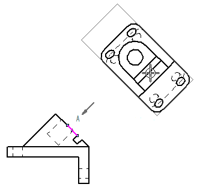

Auxiliary views
The Auxiliary View command creates a new part view that shows the part rotated 90 degrees about a folding line. The drawing view is created from the axis of this fold line. You can create auxiliary views from principal views and existing auxiliary views.
Defining a folding line
The cursor is displayed as a line that is used to define the folding line. The auxiliary view is created perpendicular to this folding line. To define the folding line, move the cursor across the drawing view to highlight an edge that is perpendicular to the desired auxiliary view.

You also can define the folding line for a new auxiliary view by selecting two keypoints using existing drawing view edges. Two points are required when a single, linear element does not exist along the angle of the desired auxiliary view.

Placing the auxiliary view
After defining the folding line, the drawing view is displayed in dynamic VHL preview mode. You can move the cursor to change the folding orientation of the auxiliary view before you click to place it.

The Dynamic display option on the Drawing View Wizard tab (Solid Edge Options dialog box) controls the preview mode for new views. For more information, see Specifying a preview type for drawing views.
How do I
Create an auxiliary viewLearn more
Modifying auxiliary views and view planesLook up more details
Auxiliary View commandAuxiliary View command bar
Viewing Plane Selection command bar
Viewing Plane Properties dialog box
General tab (Viewing Plane Properties dialog box)
Caption tab (Viewing Plane, Detail Envelope, Cutting Plane Properties dialog box)